Note
Go to the end to download the full example code.
Bar Plot¶
Create bar plots for comparing categorical data.
Bar plots display the mean (or other estimator) of a numeric variable grouped by categories. cnsplots enhances bar plots with statistical testing, error bars, and publication-ready styling.
Load data¶
import numpy as np
import pandas as pd
import seaborn as sns
import cnsplots as cns
iris = cns.datasets.load_dataset("iris")
tips = cns.datasets.load_dataset("tips")
Basic barplot¶
Simple bar plot with standard error bars.
cns.figure(100, 150)
ax = cns.barplot(data=tips, x="day", y="total_bill", errorbar="se")
ax.set_title("Basic Barplot")
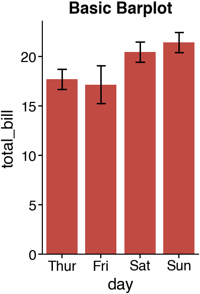
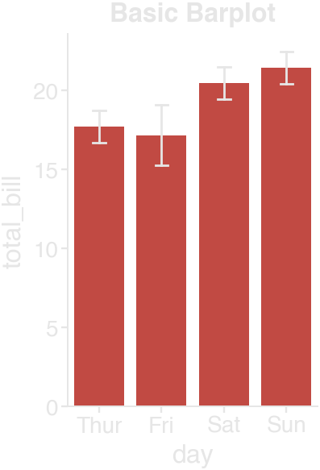
Text(0.5, 1.0, 'Basic Barplot')
Barplot with Stripplot Overlay¶
Overlay a stripplot to show individual observations on top of the summary bars. Use one palette so both bars and points share the same group colors.
day_order = ["Thur", "Fri", "Sat", "Sun"]
overlay_palette = dict(zip(day_order, sns.color_palette("NEJM", len(day_order))))
cns.figure(100, 150)
ax = cns.barplot(
data=tips,
x="day",
y="total_bill",
errorbar="se",
order=day_order,
palette=overlay_palette,
)
cns.stripplot(
data=tips,
x="day",
y="total_bill",
hue="day",
order=day_order,
hue_order=day_order,
palette=overlay_palette,
legend=False,
ax=ax,
size=2,
alpha=0.5,
showmedian=False,
)
ax.set_title("Barplot with Stripplot Overlay")
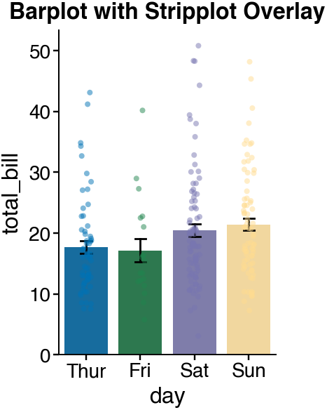
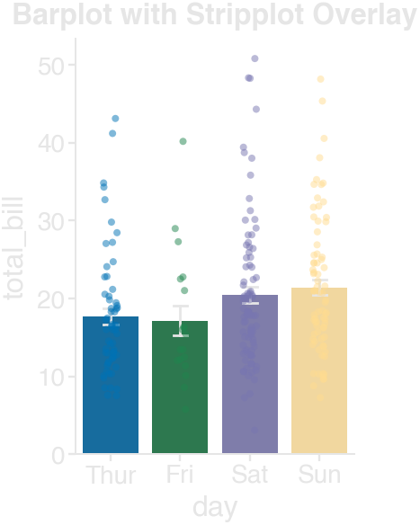
/Users/runner/work/cnsplots/cnsplots/site-build/.sphinx-staging-60hqoh7l/src/cnsplots/plots/_categorical.py:313: FutureWarning:
Passing `palette` without assigning `hue` is deprecated and will be removed in v0.14.0. Assign the `x` variable to `hue` and set `legend=False` for the same effect.
ax = sns.barplot(ax=ax, **plotting)
Text(0.5, 1.0, 'Barplot with Stripplot Overlay')
Barplot with standard deviation¶
Show variability with standard deviation error bars.
cns.figure(100, 150)
palette = {
"Sat": cns.BLUE,
"Fri": cns.BLUE,
"Thur": cns.RED,
"Sun": cns.RED,
}
cns.barplot(data=tips, x="day", y="total_bill", errorbar="sd", palette=palette)
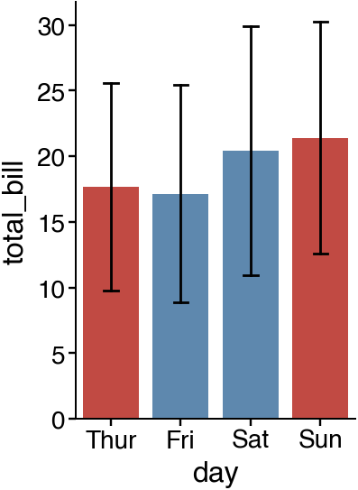
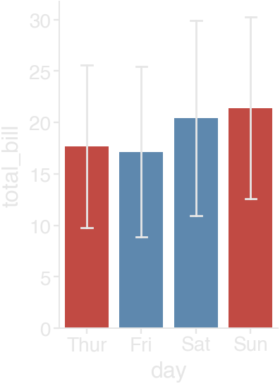
/Users/runner/work/cnsplots/cnsplots/site-build/.sphinx-staging-60hqoh7l/src/cnsplots/plots/_categorical.py:313: FutureWarning:
Passing `palette` without assigning `hue` is deprecated and will be removed in v0.14.0. Assign the `x` variable to `hue` and set `legend=False` for the same effect.
ax = sns.barplot(ax=ax, **plotting)
<Axes: xlabel='day', ylabel='total_bill'>
Barplot with confidence intervals¶
Display 95% confidence intervals.
cns.figure(100, 150)
cns.barplot(data=tips, x="day", y="total_bill", errorbar="ci")
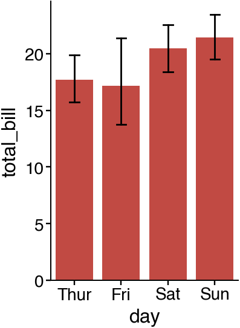
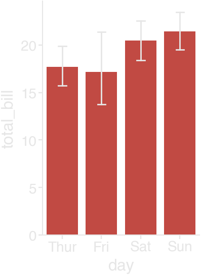
<Axes: xlabel='day', ylabel='total_bill'>
No error bars¶
Clean bars without error indicators.
cns.figure(100, 150)
cns.barplot(data=tips, x="day", y="total_bill", errorbar=None)
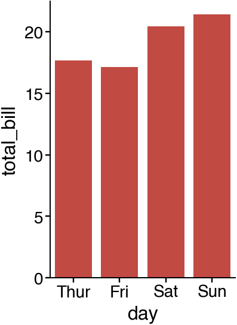
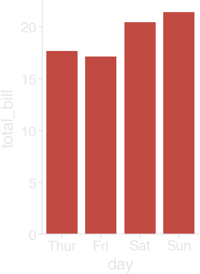
<Axes: xlabel='day', ylabel='total_bill'>
Conditional coloring¶
Color bars based on value thresholds.
mean_bills = tips.groupby("day")["total_bill"].mean()
cols = ["grey" if x < 21.0 else "orange" for x in mean_bills]
cns.figure(100, 150)
cns.barplot(data=tips, x="day", y="total_bill", palette=cols)
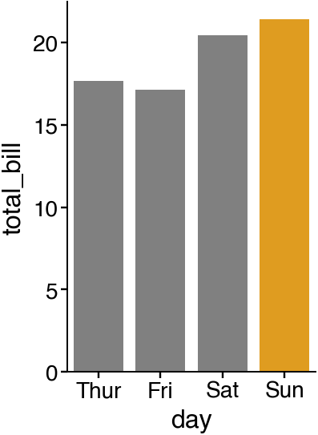
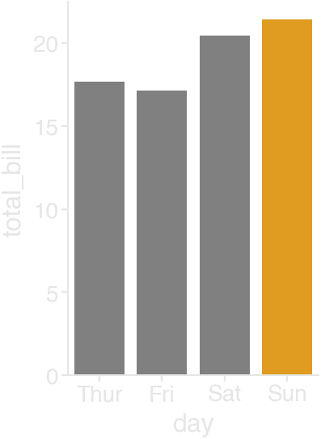
/Users/runner/work/cnsplots/cnsplots/site-build/.sphinx-staging-60hqoh7l/examples/barplot.py:101: FutureWarning: The default of observed=False is deprecated and will be changed to True in a future version of pandas. Pass observed=False to retain current behavior or observed=True to adopt the future default and silence this warning.
mean_bills = tips.groupby("day")["total_bill"].mean()
/Users/runner/work/cnsplots/cnsplots/site-build/.sphinx-staging-60hqoh7l/src/cnsplots/plots/_categorical.py:313: FutureWarning:
Passing `palette` without assigning `hue` is deprecated and will be removed in v0.14.0. Assign the `x` variable to `hue` and set `legend=False` for the same effect.
ax = sns.barplot(ax=ax, **plotting)
<Axes: xlabel='day', ylabel='total_bill'>
Statistical comparisons (all pairs)¶
Add significance annotations for all pairwise comparisons.
cns.figure(100, 150, "Tableau")
cns.barplot(data=tips, x="day", y="total_bill", pairs="all", add_tip=True)
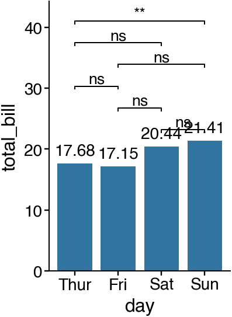
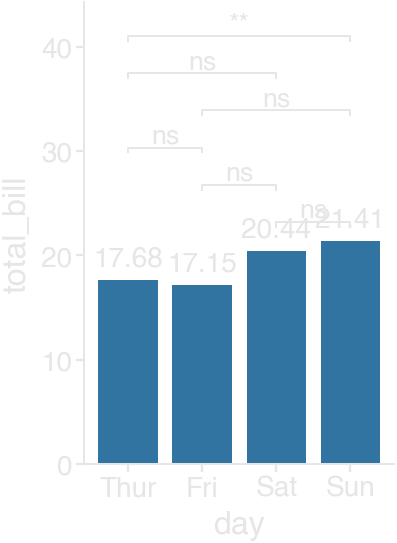
<Axes: xlabel='day', ylabel='total_bill'>
Statistical comparisons (specific pairs)¶
Compare only selected pairs of groups.
cns.figure(100, 150, "Set1")
cns.barplot(
data=tips,
x="day",
y="total_bill",
pairs=[("Thur", "Fri"), ("Sat", "Sun")],
add_tip=True,
)
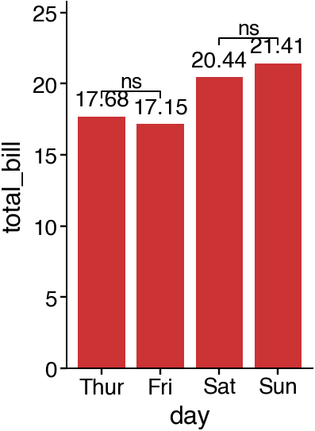
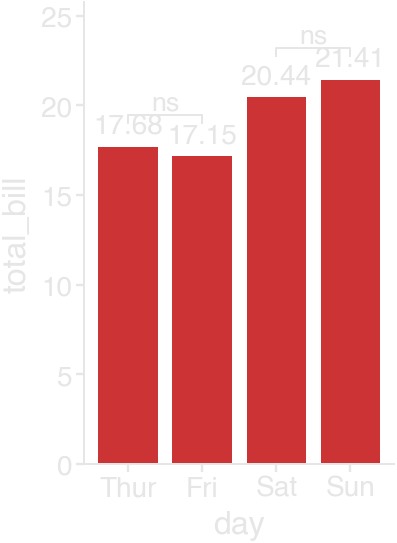
<Axes: xlabel='day', ylabel='total_bill'>
Grouped barplot with hue¶
Split bars by a secondary categorical variable.
cns.figure(100, 180, "BlueRed")
cns.barplot(data=tips, x="day", y="total_bill", hue="sex")
cns.take_legend_out()
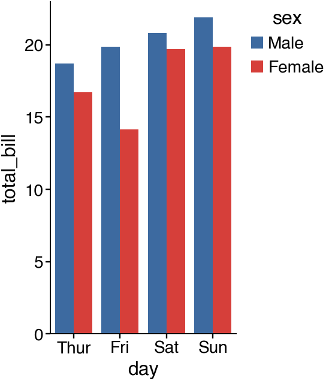
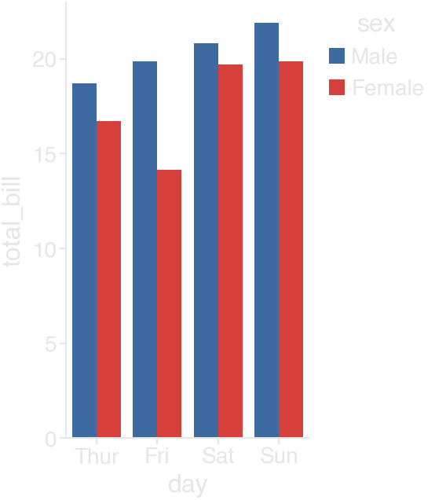
Grouped barplot with statistical testing¶
Compare specific groups across hue levels.
cns.figure(100, 180, "BlueRed")
cns.barplot(
data=tips,
x="day",
y="total_bill",
hue="sex",
pairs=[(("Thur", "Male"), ("Fri", "Male"))],
)
cns.take_legend_out()
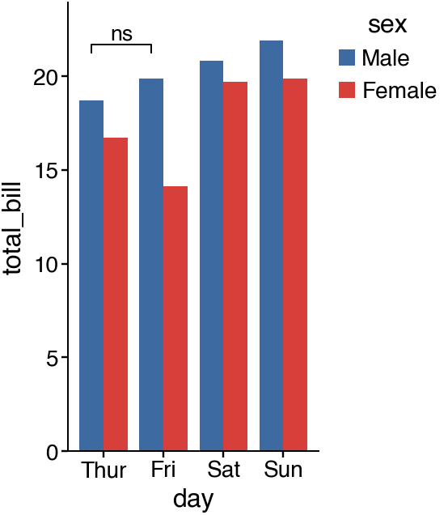
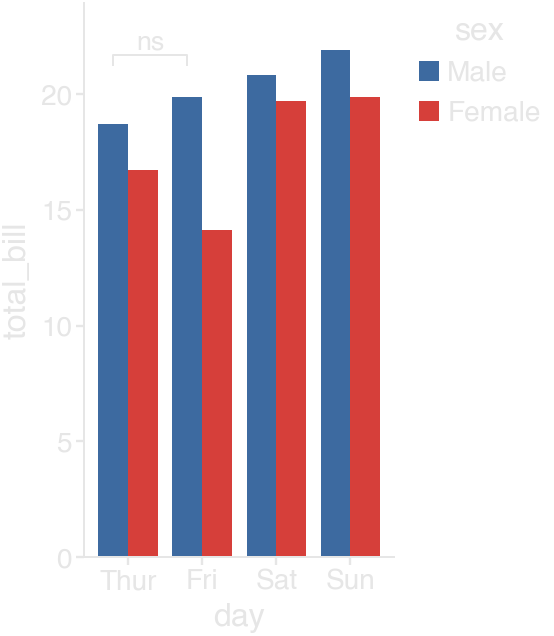
Horizontal barplot¶
Flip axes for horizontal layout.
cns.figure(180, 100, "Set1")
cns.barplot(
data=tips,
x="total_bill",
y="day",
order=["Sun", "Fri", "Thur", "Sat"],
pairs=[("Sun", "Fri")],
)
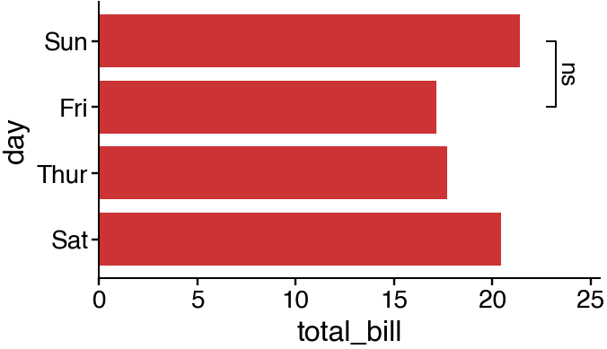
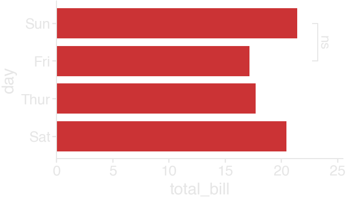
<Axes: xlabel='total_bill', ylabel='day'>
Custom order¶
Specify the order of categories.
cns.figure(100, 150, "Tableau")
cns.barplot(
data=tips,
x="day",
y="total_bill",
order=["Thur", "Fri", "Sat", "Sun"],
)
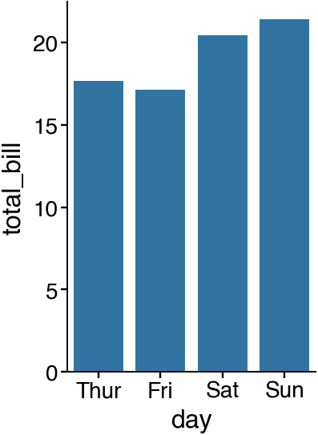
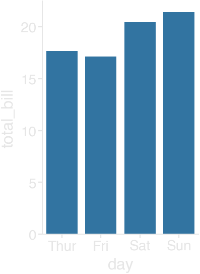
<Axes: xlabel='day', ylabel='total_bill'>
Diverging barplot (centered on mean)¶
Show deviations from the mean with centered bars.
tips_centered = tips.copy()
tips_centered["bill_deviation"] = (
tips_centered["total_bill"] - tips_centered["total_bill"].mean()
)
cns.figure(150, 100, "Tableau")
ax = cns.barplot(data=tips_centered, x="day", y="bill_deviation")
ax.axhline(0, color="k", clip_on=False, lw=0.8)
ax.spines["bottom"].set_visible(False)
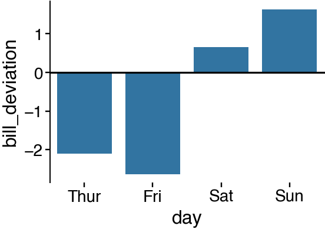
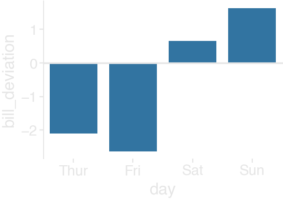
Horizontal diverging barplot¶
Horizontal layout for diverging bars.
cns.figure(100, 150, "Tableau")
ax = cns.barplot(data=tips_centered, y="day", x="bill_deviation")
ax.axvline(0, color="k", clip_on=False, lw=0.8)
ax.spines["left"].set_visible(False)
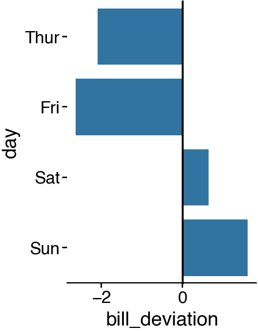
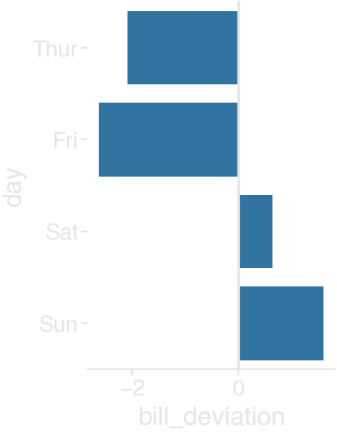
Barplot with species data¶
Compare measurements across species.
cns.figure(100, 150, "Bold")
ax = cns.barplot(data=iris, x="species", y="sepal_width", pairs="all", add_tip=True)
ax.set_xticklabels(
ax.get_xticklabels(), rotation=45, ha="right", rotation_mode="anchor"
)
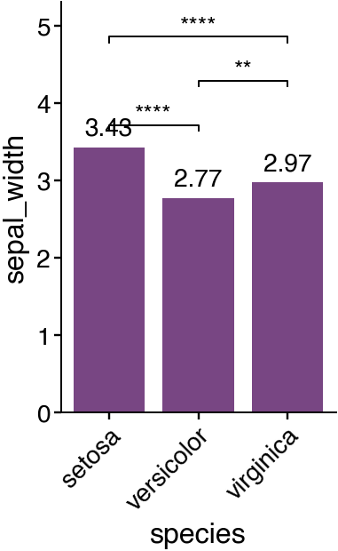
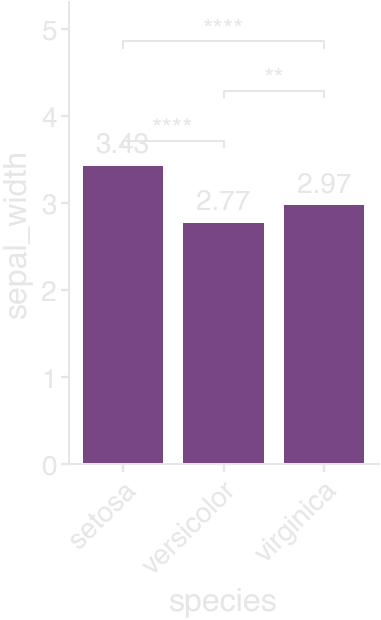
/Users/runner/work/cnsplots/cnsplots/site-build/.sphinx-staging-60hqoh7l/examples/barplot.py:210: UserWarning: set_ticklabels() should only be used with a fixed number of ticks, i.e. after set_ticks() or using a FixedLocator.
ax.set_xticklabels(
[Text(0, 0, 'setosa'), Text(1, 0, 'versicolor'), Text(2, 0, 'virginica')]
Barplot with value labels¶
Display the aggregated value above each bar.
cns.figure(150, 150)
cns.barplot(data=iris, x="species", y="sepal_length", add_tip=True)
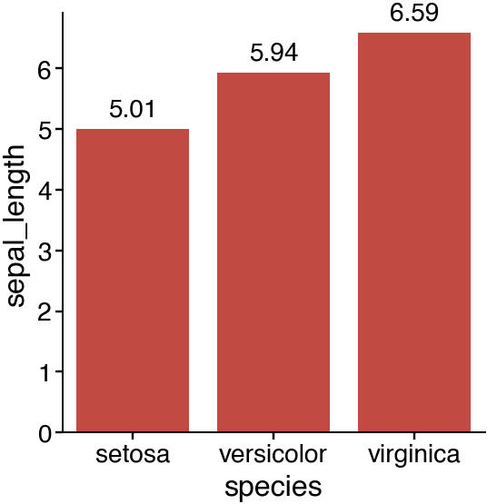
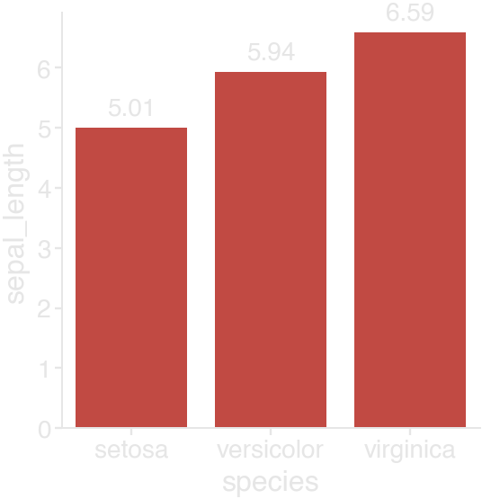
<Axes: xlabel='species', ylabel='sepal_length'>
Multiple metrics comparison¶
Compare different measurements using multipanel.
mp = cns.multipanel(max_width=310)
mp.panel("A", 120, 80, margin_bottom=20)
cns.barplot(data=iris, x="species", y="sepal_length")
mp.get_axes("A").set_title("Sepal Length")
mp.panel("B", 120, 80, margin_right=0)
cns.barplot(data=iris, x="species", y="sepal_width")
mp.get_axes("B").set_title("Sepal Width")
mp.newline()
mp.panel("C", 120, 80)
cns.barplot(data=iris, x="species", y="petal_length")
mp.get_axes("C").set_title("Petal Length")
mp.panel("D", 120, 80, margin_right=0)
cns.barplot(data=iris, x="species", y="petal_width")
mp.get_axes("D").set_title("Petal Width")
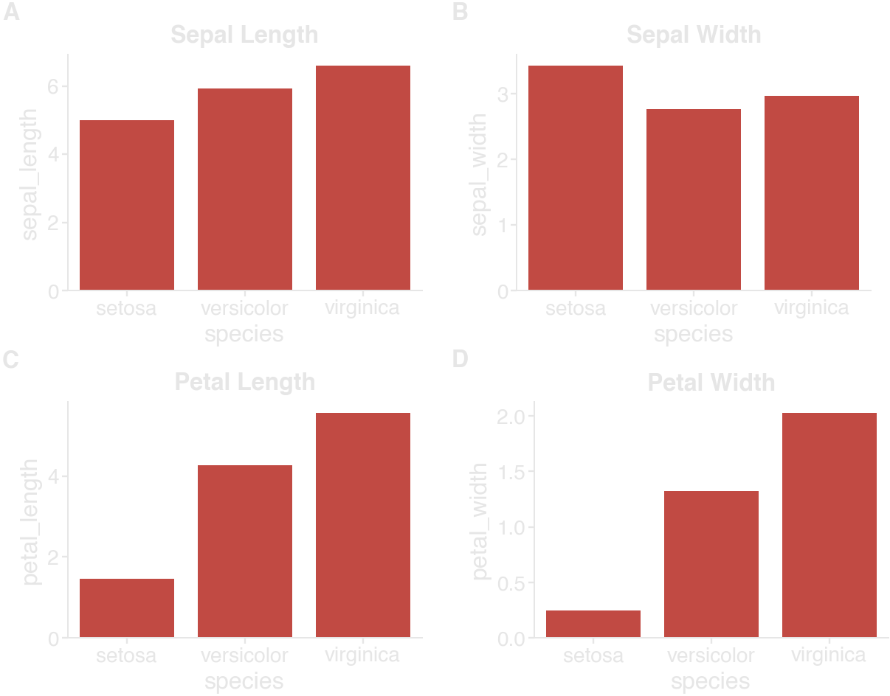
Text(0.5, 1.0, 'Petal Width')
Error bar comparison¶
Compare different error bar types side by side.
mp = cns.multipanel(max_width=420)
mp.panel("A", 100, 100)
cns.barplot(data=tips, x="day", y="total_bill", errorbar="se")
mp.get_axes("A").set_title("Standard Error")
mp.panel("B", 100, 100)
cns.barplot(data=tips, x="day", y="total_bill", errorbar="sd")
mp.get_axes("B").set_title("Std Deviation")
mp.panel("C", 100, 100, margin_right=0)
cns.barplot(data=tips, x="day", y="total_bill", errorbar="ci")
mp.get_axes("C").set_title("95% CI")
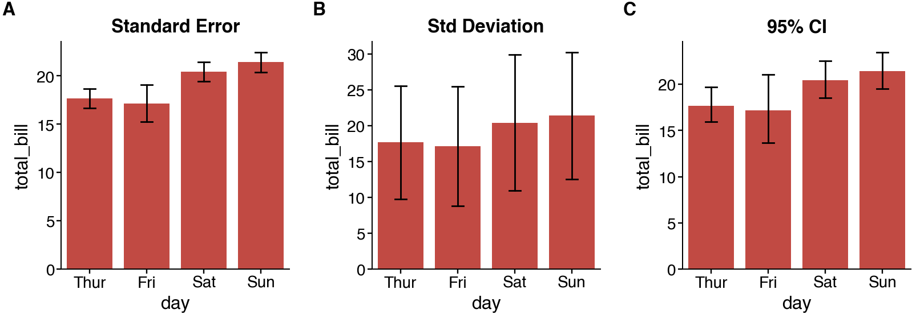
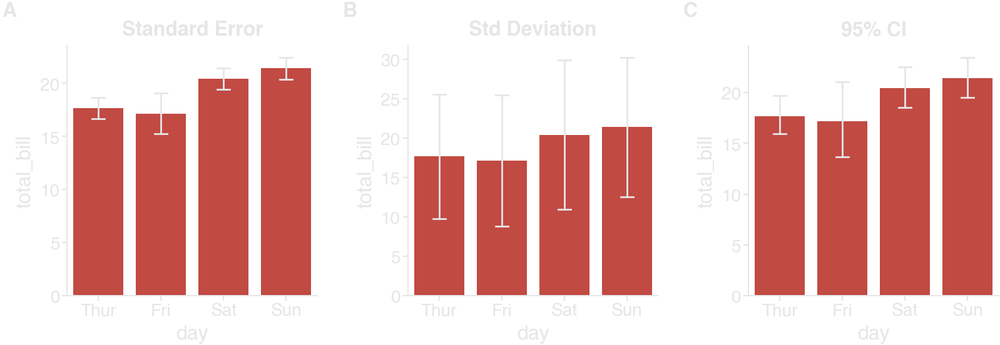
Text(0.5, 1.0, '95% CI')
Grouped analysis by time¶
Compare groups across different time periods.
mp = cns.multipanel(max_width=410)
lunch = tips[tips["time"] == "Lunch"]
dinner = tips[tips["time"] == "Dinner"]
mp.panel("A", 150, 100)
cns.barplot(data=lunch, x="day", y="total_bill", hue="sex")
mp.get_axes("A").legend().remove()
mp.get_axes("A").set_title("Lunch")
mp.panel("B", 150, 100, margin_right=0)
cns.barplot(data=dinner, x="day", y="total_bill", hue="sex")
cns.take_legend_out()
mp.get_axes("B").set_title("Dinner")
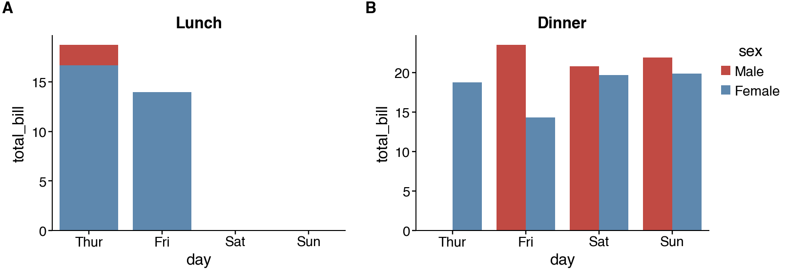
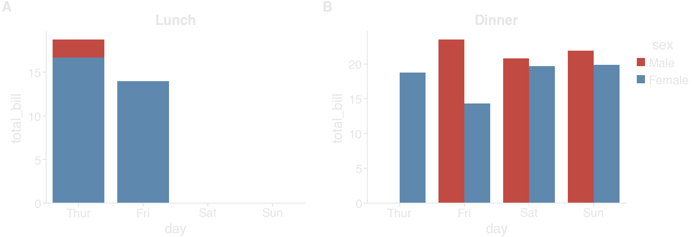
Text(0.5, 1.0, 'Dinner')
Percentage change visualization¶
Show relative changes from baseline.
np.random.seed(42)
baseline = pd.DataFrame(
{
"treatment": ["Control", "Drug A", "Drug B", "Drug C"],
"pct_change": [0, 25, -15, 45],
"error": [5, 8, 6, 10],
}
)
colors = [
"gray" if x == 0 else ("green" if x > 0 else "red") for x in baseline["pct_change"]
]
cns.figure(100, 150, color_cycle=colors)
ax = cns.barplot(data=baseline, x="treatment", y="pct_change", errorbar=None)
ax.axhline(0, color="k", lw=0.8)
ax.set_ylabel("% Change from Baseline")
ax.set_xticklabels(
ax.get_xticklabels(), rotation=45, ha="right", rotation_mode="anchor"
)
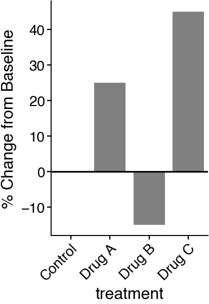
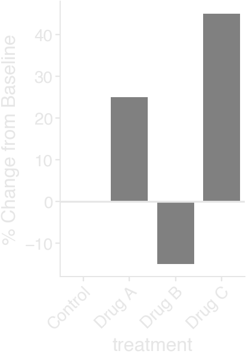
/Users/runner/work/cnsplots/cnsplots/site-build/.sphinx-staging-60hqoh7l/examples/barplot.py:306: UserWarning: set_ticklabels() should only be used with a fixed number of ticks, i.e. after set_ticks() or using a FixedLocator.
ax.set_xticklabels(
[Text(0, 0, 'Control'), Text(1, 0, 'Drug A'), Text(2, 0, 'Drug B'), Text(3, 0, 'Drug C')]
Gene expression comparison¶
Biological example: gene expression by condition.
np.random.seed(42)
gene_data = pd.DataFrame(
{
"gene": ["TP53"] * 30 + ["BRCA1"] * 30 + ["MYC"] * 30,
"expression": np.concatenate(
[
np.random.normal(5, 1, 30),
np.random.normal(3, 0.8, 30),
np.random.normal(7, 1.5, 30),
]
),
"condition": (["Control"] * 15 + ["Treatment"] * 15) * 3,
}
)
cns.figure(100, 180)
ax = cns.barplot(
data=gene_data,
x="gene",
y="expression",
hue="condition",
pairs=[(("TP53", "Control"), ("TP53", "Treatment"))],
)
ax.set_ylabel("Expression (log2 TPM)")
cns.take_legend_out()
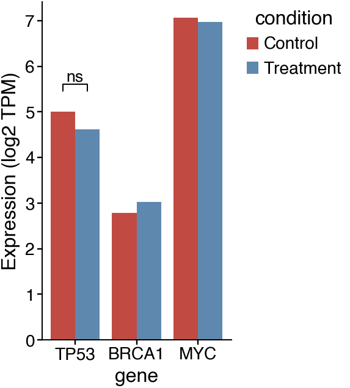
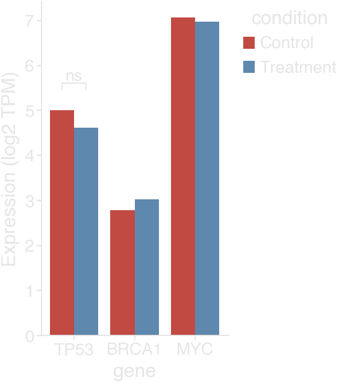
Palette comparison with bars¶
Different palettes for the same data.
mp = cns.multipanel(max_width=310)
mp.panel("A", 120, 80, color_cycle="Set1", margin_bottom=20)
cns.barplot(data=tips, x="day", y="total_bill")
mp.get_axes("A").set_title("Set1")
mp.panel("B", 120, 80, color_cycle="Tableau", margin_right=0)
cns.barplot(data=tips, x="day", y="total_bill")
mp.get_axes("B").set_title("Tableau")
mp.newline()
mp.panel("C", 120, 80, color_cycle="Bold")
cns.barplot(data=tips, x="day", y="total_bill")
mp.get_axes("C").set_title("Bold")
mp.panel("D", 120, 80, color_cycle="Pastel1", margin_right=0)
cns.barplot(data=tips, x="day", y="total_bill")
mp.get_axes("D").set_title("Pastel1")
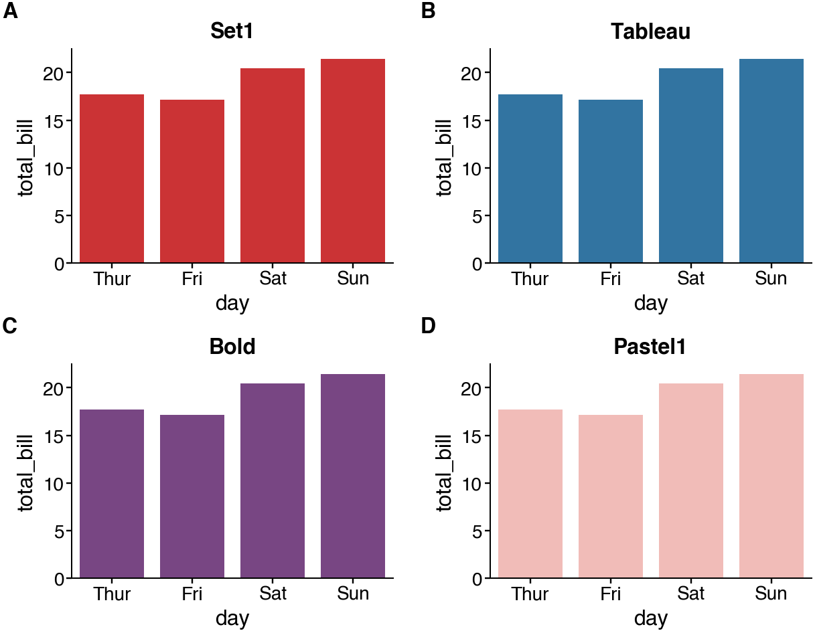
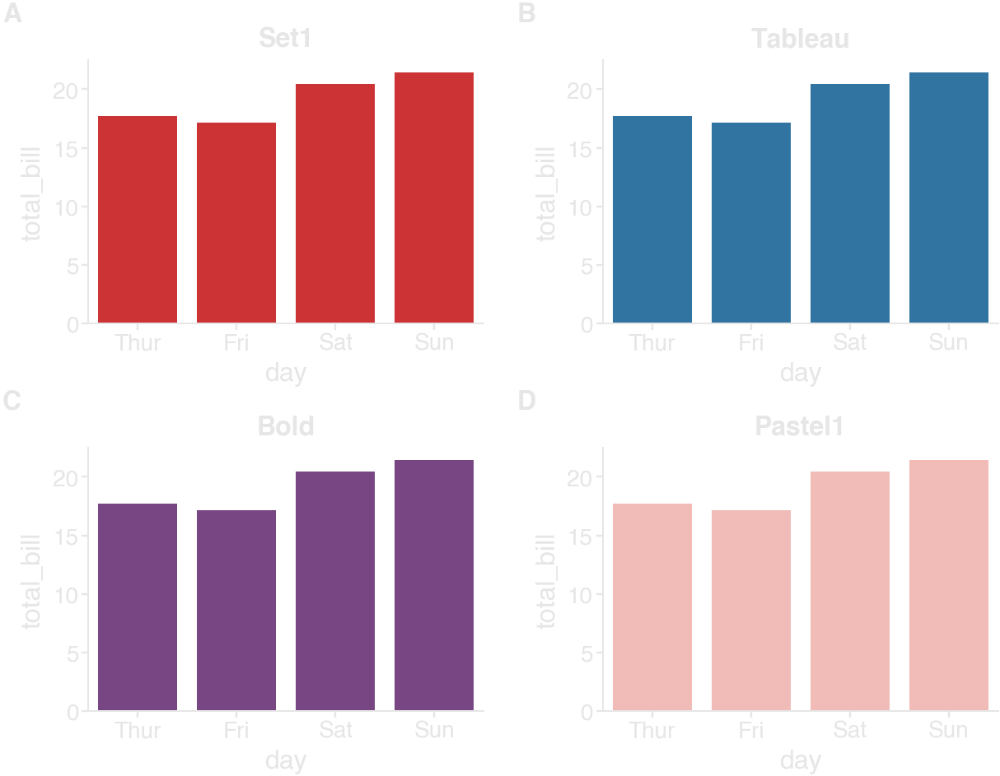
Text(0.5, 1.0, 'Pastel1')
Total running time of the script: (0 minutes 2.354 seconds)